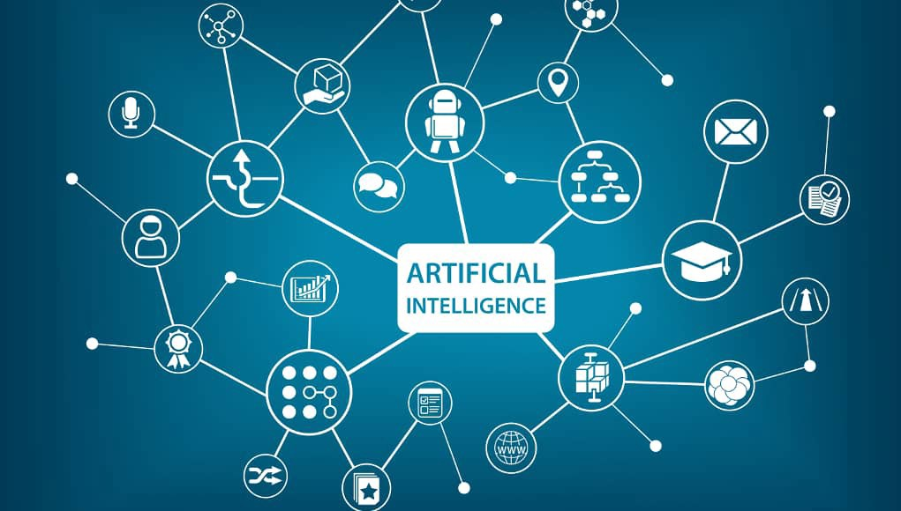
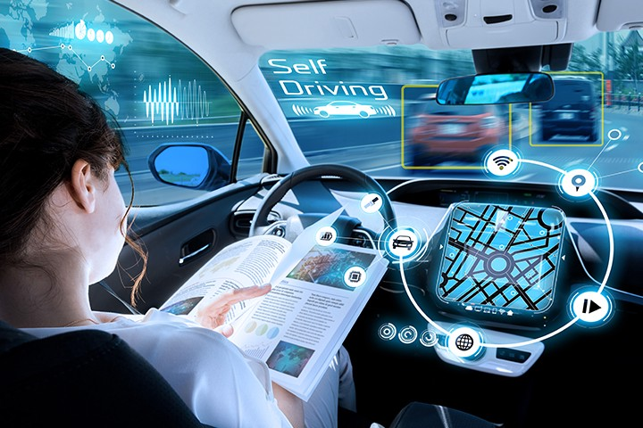

Go Back
Chapter 1 - History
- Beginning
The first applications of AI was during World War II.
Where Alan Turing and other scientists created the machine using AI to break the code of Enigma machine, originally created by Germans,
to have secure conversations with their troops.
- Medieval
In the early 80s, AI was used by many commerce companies in their expert systems.
By 1985, the AI market was over a billion dollars, and it seemed to be a huge success for many inventors.
- Present
Nowadays, AI is used in many sectors such as, medical, technical, automation, agricultural, etc.
And we will look at some of these applications in Chapter 2.

Chapter 2 - Applications
- Healthcare
AI is assisting doctors. It is making it easy for them to work on the equipment they need and making it faster for them to get the results that could potentially help their patients.

- Automotive
Self-driving cars are everywhere now, and all thanks goes to AI.
It is helping car manufacturers in producing cars that could make a difference in this industry and can also prevent many accidents from happening.

- Finance
Finance sector has been highly impacted by this technology, because it can make use of the mathematical calculations included in its daily routine.
Stock markets are the major users of AI in its regular operations where AI could help predict the future market.
Chapter 3 - Philosophy
- Advantages
AI has many advantages and it can help us in our daily-life activities more than we can imagine.
We use it everyday, and we don't even know it. The social media applications that we use nowadays, all include machine learning, a part of AI.
- Disadvantages
There are always two sides of a coin, so AI also has its limitations.
It can take over many jobs that people do nowadays, and can impact their future. It can also damage our lifestyle in many ways,
because, after all, it is just some programming, and depending on it with our lives could be a potential harm to ourselves.
- Future
Many people say that AI is, by far, the most useful technological innovation in human history.
However, other people think that it can damage our future, because it can take over the world and there won't be any job opportunities for next generations.
We will just have to wait and watch...